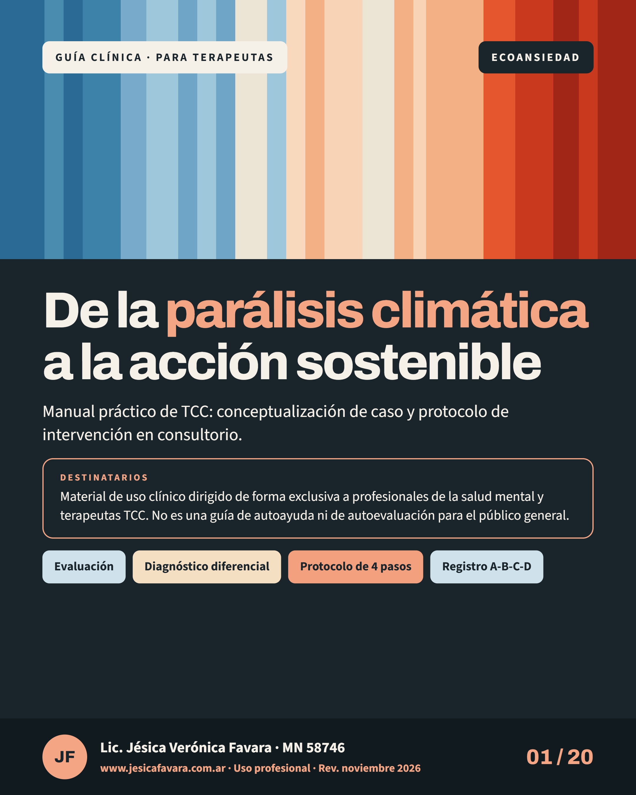

De la parálisis climática a la acción sostenible
Ecoansiedad clínica: manual práctico de TCC
Conceptualización de caso y protocolo de intervención en consultorio para personas con ecoansiedad. Incluye evaluación, protocolo de 4 pasos y registros.
PDF · 20 láminas · Octubre 2026